Natural village · goal-oriented 30-cycle comparison
마을 근처 자연 월드에서 모델이 실제로 뭘 했는지 본다
이번 run은 연구 결론이 아니다. natural-village-spawn-v1에서 fresh world를 매 lane마다 만들고, actor가 30 cycles 동안 shared work point의 실마리를 실제 Minecraft evidence로 남기는지 본 pilot이다. 말이 아니라 inventory delta, placed block, movement, verifier result, screenshot capture를 본다.
Research target todaygoal-oriented physical competence + continuity
Not countedprose claim, self-declared progress, screenshot-only block identity
Tasklogs → planks/sticks/table → safe village-adjacent work point
Decision use다음 60-cycle 전 runtime/action-skill gap을 찾는 pilot
lanes3Qwen Plus · Qwen Max · GPT-5.4 mini
cycles9030 cycles × 3 fresh worlds
visual captures288first/follow/high every cycle
verified progress35review outcome, not self-report
provider records280OpenAI mini drove most requests
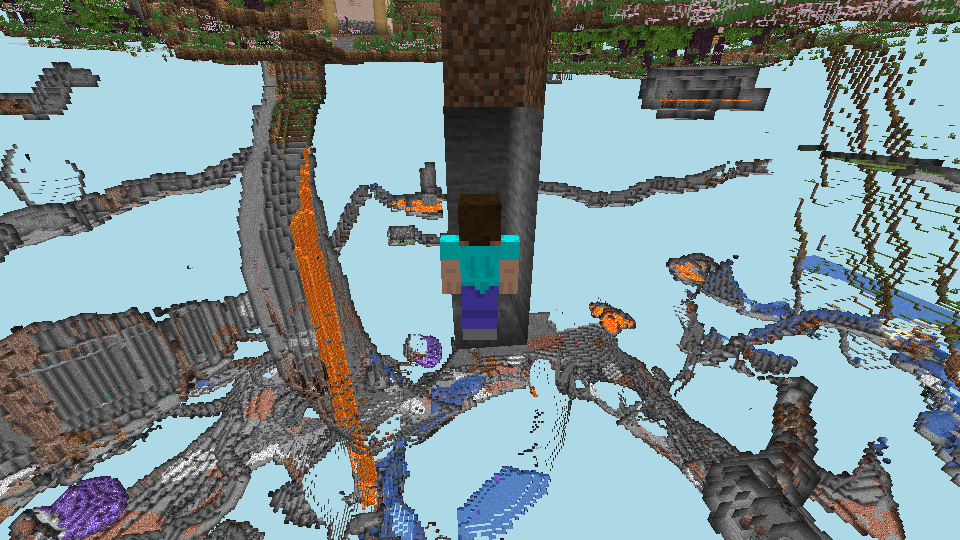
visual audit passedserver 1.21.4renderer is review-only
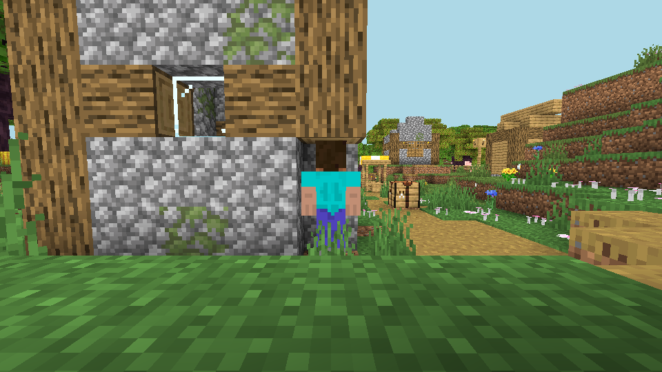
Qwen Plus · final follow
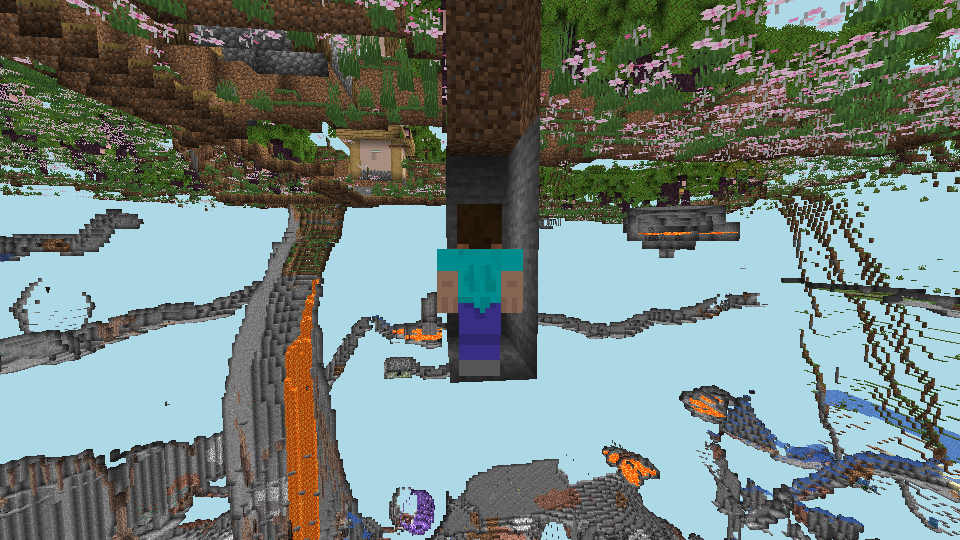
Qwen Max · final follow
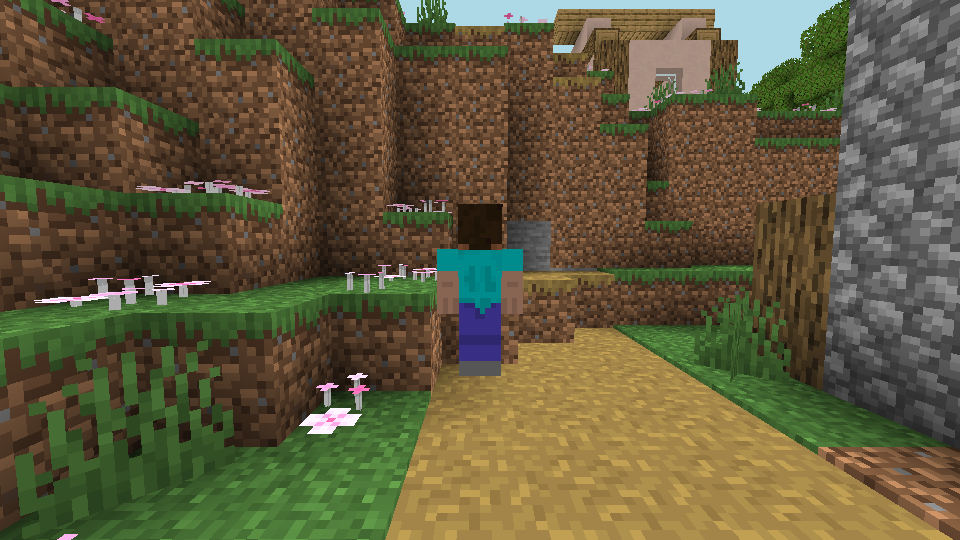
GPT-5.4 mini · final follow
Protocol
같은 seed, 같은 scenario, 매 lane fresh world. 목적은 workbench foothold evidence.
Scenario
natural-village-spawn-v1
Seed
4167799982467607063
Reset
--fresh-world per lane
Actor
npc_b, run-scoped workspace under data/actors/social-runs/<run_id>
Visual profile
report, first_person, third_person_follow, third_person_high, every cycle
Concrete evidence
inventory delta, world block delta, position delta, container mutation, explicit blocker evidence
해석 기준. 이 run은 Goldilocks prediction gate가 아니다. 지금 보는 건 자연 마을 스폰에서 actor가 30 cycles 동안 material chain을 유지하고, 실패 후 같은 실패만 반복하는지, runtime evidence가 나중에 리뷰 가능한지다.
Model lanes
세 lane 모두 30 cycles 완주. 하지만 “완주”와 “목표 달성”은 다르다.
modelscope-api
Qwen Plus
Qwen-Ambassador/Qwen3.7-Plus
12/30
초반 wood → planks/sticks → crafting table → wooden pickaxe 연결을 가장 깔끔하게 닫았다. 후반에는 이동과 채굴 매핑에서 마찰이 커졌다.
20 verifier passed8 blocked38 provider records1.13M total tokens
매 cycle 캡쳐는 됐다. 단, block identity는 runtime state가 권위다.
Qwen Plus
initial
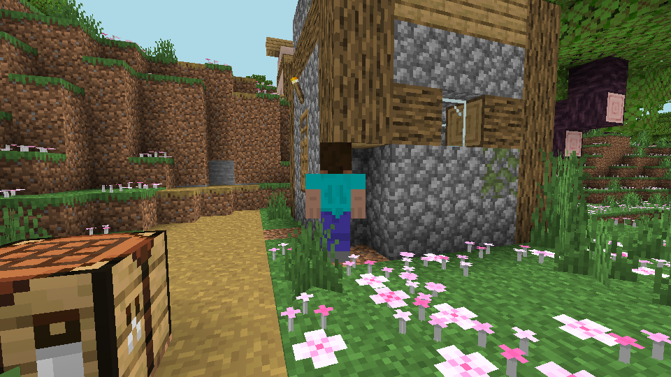
cycle 10
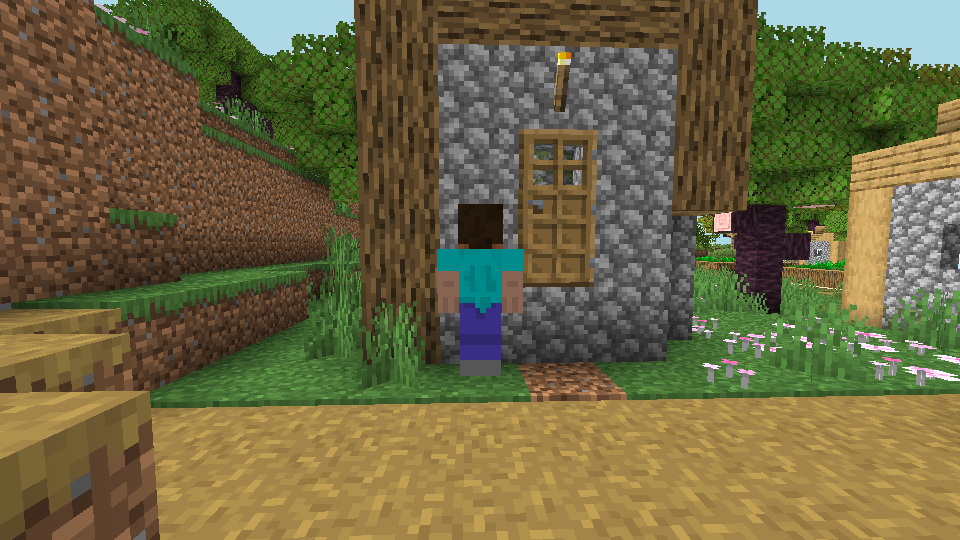
cycle 20
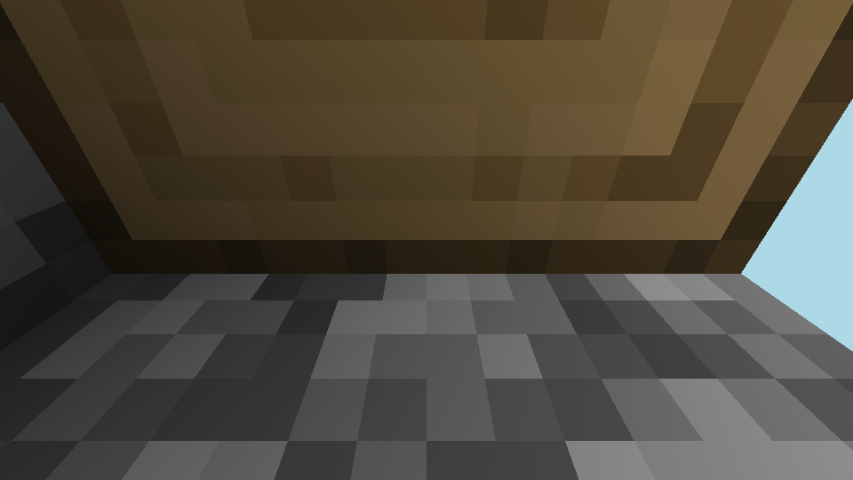
final firstfinal follow
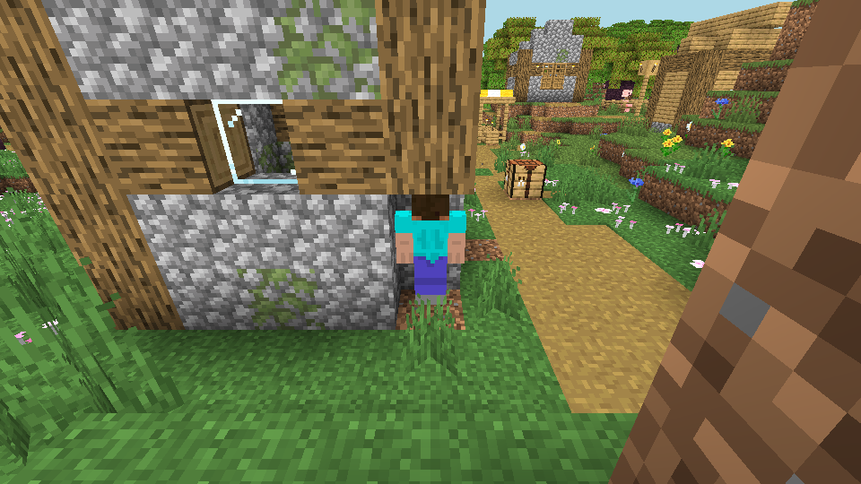
final high
Qwen Max
initial
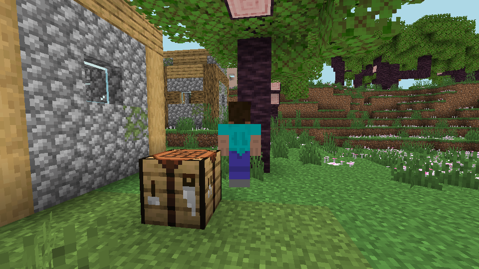
cycle 10
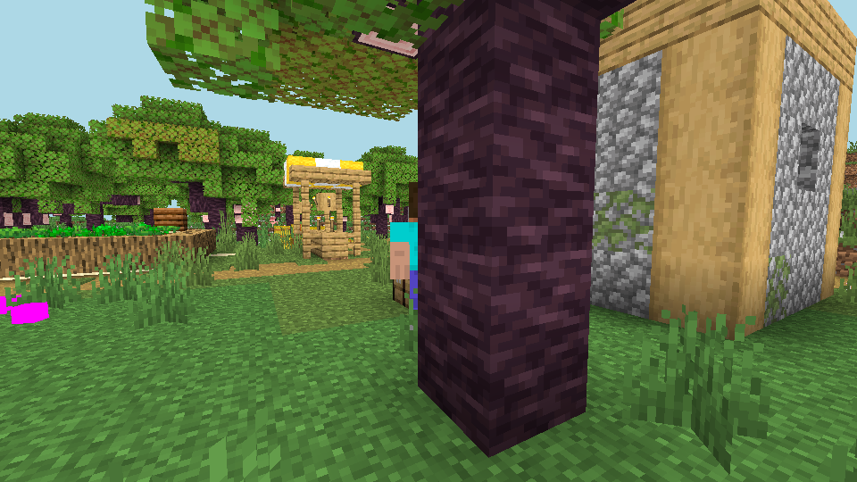
cycle 20
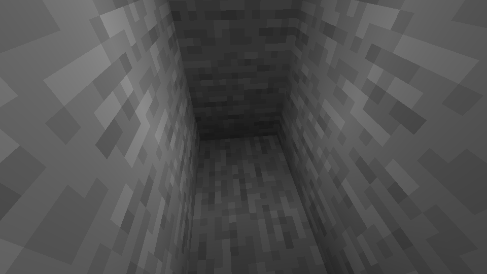
final firstfinal followfinal high
GPT-5.4 mini
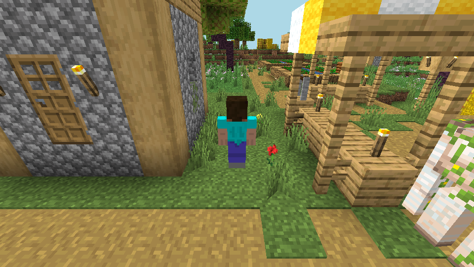
initial
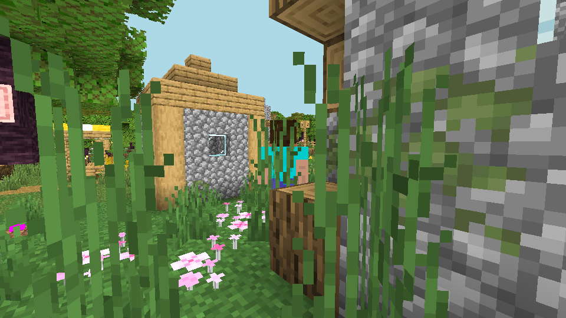
cycle 10
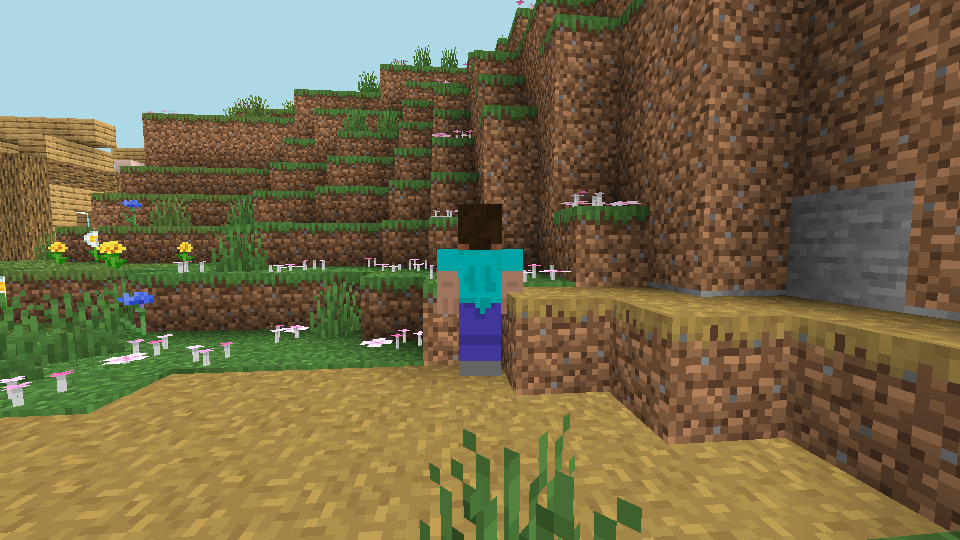
cycle 20
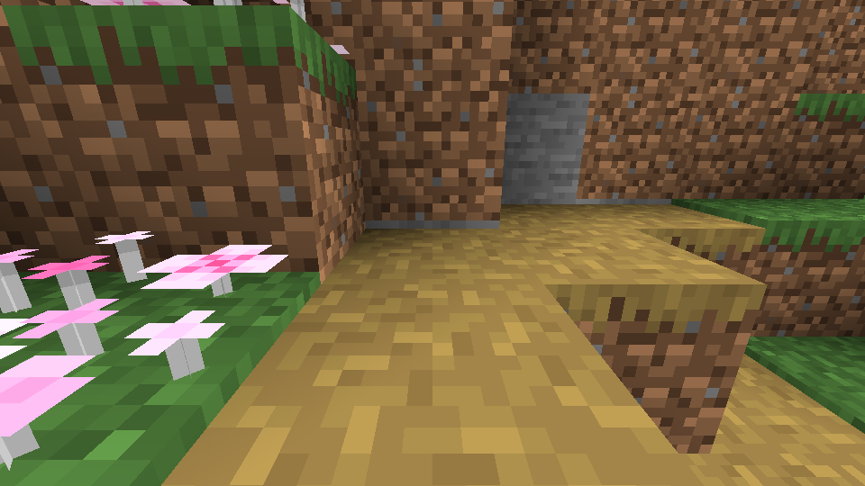
final firstfinal follow
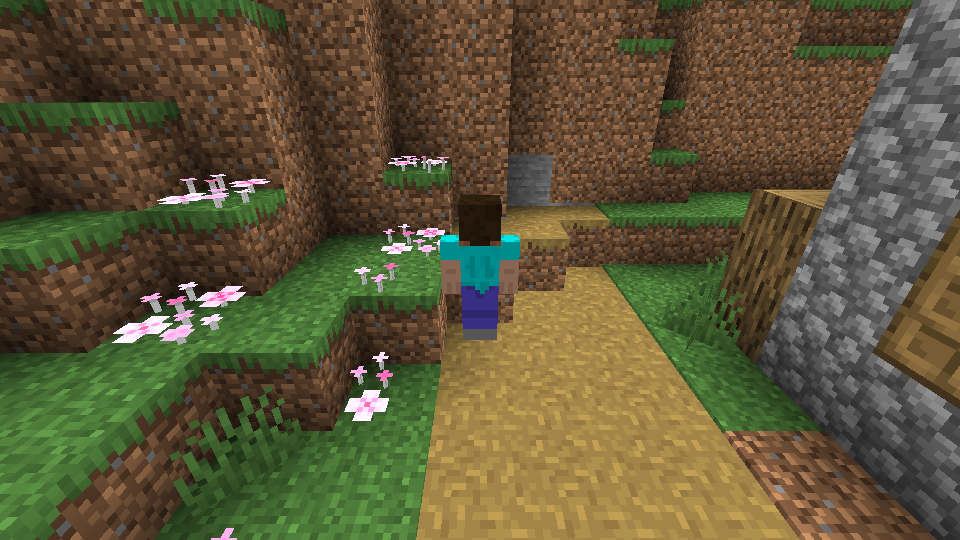
final high
All three lanes passed visual-evidence-audit/v1. Screenshots are useful for human review of motion and context. They are not authoritative for block names, especially when prismarine-viewer renders unsupported or version-skewed blocks strangely.
OpenAI mini caveat. Preflight는 40 requests / 1.3M tokens로 allowed였다. 실제 run은 204 provider records / 1.12M total tokens였다. 토큰은 mini pool 안에 남았지만, request estimate는 틀렸다. 다음 OpenAI mini 30-cycle은 최소 220 requests로 preflight해야 한다.
Qwen Ambassador angle. Qwen Max는 이번 pilot에서 가장 높은 verified progress와 후반 material diversity를 보였다. Qwen Plus는 초반 workbench chain이 더 깔끔했다. 둘 다 shared storage와 shelter는 못 닫았다. 이건 모델 홍보용 승패보다 harness가 실제로 어디를 봐야 하는지 알려준다.
Next run
바로 60-cycle로 키우기 전에 placement/codegen gap을 먼저 좁힌다.
Keep
natural-village-spawn-v1, fresh world per lane, report visual profile, same three camera modes, run-scoped workspaces.
Fix before larger comparison
place_block / placeCraftingTable blocker diagnosis, generated Mineflayer output schema friction, movement timeout recovery, final inventory consolidation in the summary.
Budget rule
Qwen 30-cycle: estimate at least 40 requests per lane. OpenAI gpt-5.4-mini 30-cycle: estimate at least 220 requests and 1.3M+ total tokens. gpt-5.5 remains blocked for this comparison unless local cap and dashboard state change.
Research use
This pilot supports the no-regret core: it shows concrete transition evidence, runtime blockers, visual completeness, and action-skill gaps. It does not prove the Goldilocks prediction layer yet.